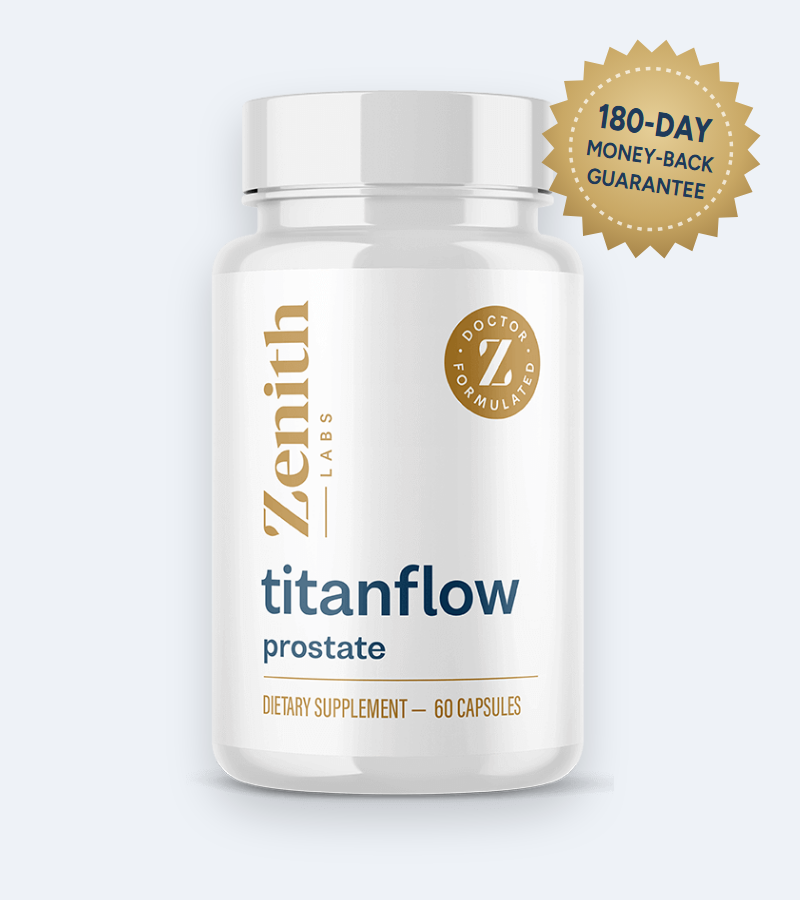
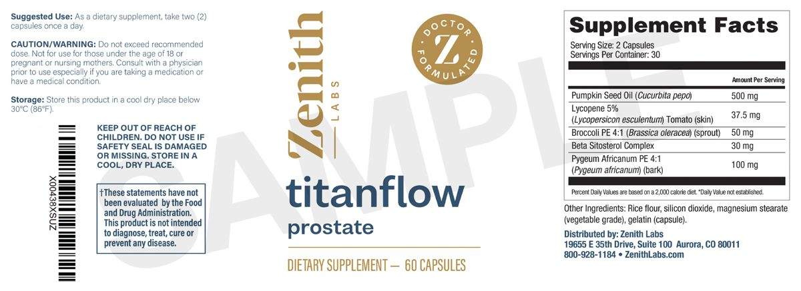
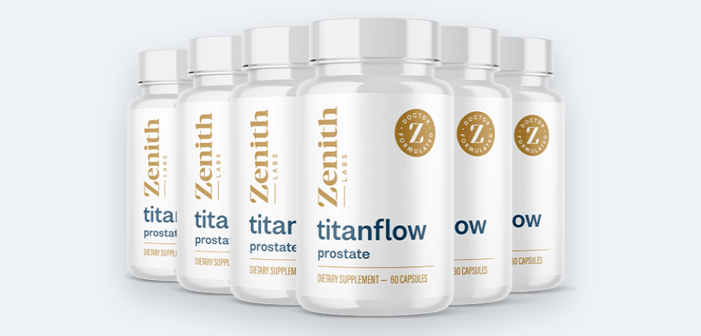
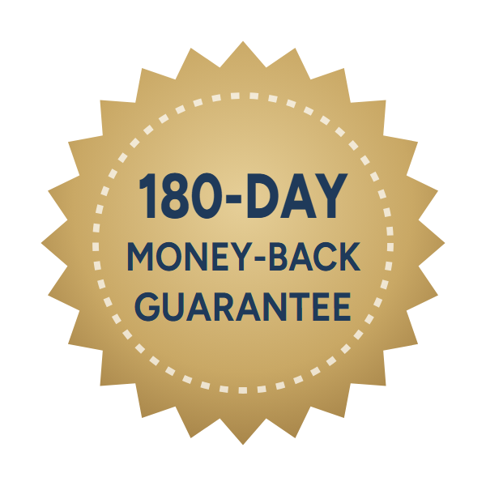

Support the Urethra
The sales page says pumpkin seed oil and beta-sitosterol help "fortify urethra walls" so the bladder empties fully.*
MediPicker may earn money when you buy through links on this page. Sellers can’t pay for a review or a better rating. How we make money
The full Zenith Labs label, the research on each ingredient, realistic results and how to buy safely

TitanFlow (often searched as Titan Flow) is a 60-capsule urinary-flow supplement for men from Zenith Labs, presented by Dr. Ryan Shelton. Unlike many prostate products, its full supplement facts label is published: pumpkin seed oil, pygeum, beta-sitosterol, lycopene and broccoli sprout extract.
In this TitanFlow review we go through every ingredient and dose on that label, compare them with the clinical research, explain the sales page's "urethra strength" story, list the side effects and safety checks, and cover the current price, the 180-day guarantee and how to buy from the official website.
TitanFlow is a white bottle of 60 capsules labeled "titanflow prostate" from Zenith Labs, a Colorado supplement company. It's sold through a long sales page presented by Dr. Ryan Shelton, a naturopathic doctor (NMD) and Zenith Labs' medical director, with checkout handled by ClickBank.
The page is aimed at "men over forty" who worry about weak flow, urgency and getting up at night. Its pitch is that urinary trouble isn't only about prostate size: according to the page, the urethra itself weakens and gets "squeezed shut", and TitanFlow is said to be the first formula to "strengthen urethra walls".
Unlike many supplements in this category, Zenith Labs publishes the full supplement facts label with every dose. That makes TitanFlow easier to judge than most prostate formulas, and it's the basis of this review.
TitanFlow is a dietary supplement, not a treatment for an enlarged prostate (BPH) or any other condition.
The sales page says pumpkin seed oil and beta-sitosterol help "fortify urethra walls" so the bladder empties fully.*
Pygeum bark is said to help relax smooth muscle around the bladder neck for a steadier stream.*
Lycopene and broccoli sprouts supply antioxidants said to protect the cells lining the urethra.*
The real mechanism behind most men's flow problems is simpler: the prostate grows with age (benign prostatic hyperplasia, or BPH) and the muscle around it tightens, narrowing the urethra. The herbal ingredients in TitanFlow have been studied for exactly these BPH symptoms, so the formula makes sense even if the "urethra strength" story is marketing.
We couldn't find the Johns Hopkins study the page refers to, and no research shows that any supplement "strengthens urethra walls". Treat that part as a sales angle.
Every ingredient and dose from the official TitanFlow supplement facts label. Other ingredients: rice flour, silicon dioxide, magnesium stearate, gelatin capsule.
| Ingredient | Per serving (2 capsules) | What it is |
|---|---|---|
| Pumpkin seed oil | 500 mg | Oil from Cucurbita pepo seeds, rich in phytosterols and fatty acids |
| Pygeum africanum 4:1 extract | 100 mg | Bark of the African plum tree, a classic European BPH remedy |
| Broccoli sprout 4:1 extract | 50 mg | Source of glucoraphanin / sulforaphane (amount not stated) |
| Lycopene 5% (tomato skin) | 37.5 mg | Provides about 1.9 mg of lycopene |
| Beta-sitosterol complex | 30 mg | Plant sterols, the main active group in many BPH extracts |
Source: Zenith Labs label for TitanFlow, 60 capsules, 30 servings.

Two things stand out. First, TitanFlow skips saw palmetto, the most common prostate herb, which large trials found no better than placebo. Second, three of the five doses are at or near the amounts used in research (pumpkin seed oil, pygeum), while beta-sitosterol and lycopene are well below the studied doses.
Our take: a sensible, transparent formula built on the better-studied BPH herbs, but two of its five ingredients are underdosed and it isn't the "first in the world" of anything.
How each TitanFlow dose compares with the amounts used in clinical research.
| Ingredient | TitanFlow dose | Studied dose | Evidence for urinary symptoms |
|---|---|---|---|
| Pumpkin seed oil | 500 mg | 320–1,000 mg oil; 10 g seeds | Modest symptom improvement in BPH trials; large GRANU trial helped with seeds, not extract |
| Pygeum | 100 mg extract | 75–200 mg extract | Reviews of older trials: less night-time urination and better flow; mostly small, short studies |
| Beta-sitosterol | 30 mg | 60–195 mg | Improved symptom scores and peak flow in a Cochrane review, at 2–6x TitanFlow's dose |
| Lycopene | ~1.9 mg | 15 mg | One small trial slowed prostate growth markers; little urinary-flow data |
| Broccoli sprout | 50 mg extract | Varies (sulforaphane) | Studied for PSA trends, not urinary flow |
A one-year Korean trial in men with BPH found that 320 mg of pumpkin seed oil a day improved symptom scores and quality of life more than placebo, without changing prostate size. The largest study, the German GRANU trial of about 1,400 men, found that eating 10 g of pumpkin seeds a day produced a modest benefit over placebo after a year, while a pumpkin seed extract capsule did not. TitanFlow's 500 mg of oil sits within the range of the positive oil studies.
Cochrane reviewers pooled 18 older trials with about 1,500 men and found pygeum reduced night-time urination by around 19% and improved peak flow by about 23% compared with placebo. The trials were small and short, used standardized extracts at 75–200 mg a day, and pygeum was less effective than prescription drugs. TitanFlow's 100 mg is a 4:1 extract that isn't standardized, so its strength can't be compared exactly.
A Cochrane review of beta-sitosterol trials found improved urinary symptom scores and peak flow of about 4 mL per second at 60–195 mg a day. TitanFlow's 30 mg "complex" is below that range, although pumpkin seed oil adds some extra plant sterols.
A small trial gave men with BPH 15 mg of lycopene a day and saw PSA stay stable while it rose in the placebo group. TitanFlow supplies about 1.9 mg, less than a tablespoon of tomato paste. Broccoli sprout extract (sulforaphane) has been studied for PSA trends in prostate cancer, not for urinary flow. Both are antioxidant extras rather than active doses.
Bottom line: two ingredients are at research levels and one is under-dosed but helpful, so TitanFlow has a reasonable chance of easing mild symptoms modestly over two to three months. The sales page's "over 20%" flow claim is in line with the pygeum data, but it describes ingredient studies, not TitanFlow.
Half of men in their 50s and most men over 70 have some degree of benign prostatic hyperplasia (BPH), a non-cancerous enlargement of the prostate. Typical signs are a weak or stop-start stream, straining, dribbling, urgency, and getting up two or more times a night to urinate.
Doctors use the International Prostate Symptom Score (IPSS): seven questions on emptying, frequency, intermittency, urgency, weak stream, straining and night-time urination, each scored 0–5. A total of 0–7 is mild, 8–19 moderate and 20–35 severe. Supplements are mainly worth trying for mild symptoms.
The same symptoms can come from an infection, an overactive bladder, diabetes, medicines or, less often, prostate cancer. A doctor can examine the prostate, test your urine and check PSA before you try any supplement.
These simple steps help many men with mild symptoms, with or without a supplement:
Drink normally during the day but cut back in the two hours before bed, and limit caffeine and alcohol, which irritate the bladder and increase urine output.
After urinating, wait 30 seconds and try again to empty the bladder more completely.
Gradually stretch the time between bathroom visits to reduce urgency.
Decongestants, some antihistamines and diuretics can worsen flow. Ask your pharmacist about alternatives.
Regular activity and less belly fat are linked to fewer urinary symptoms.
Alpha-blockers such as tamsulosin often improve flow within days; 5-alpha-reductase inhibitors such as finasteride shrink the prostate over 6–12 months. They work faster and more strongly than any supplement.
Possible benefits based on the published research on TitanFlow's ingredients.*
Pygeum trials reported less night-time urination in men with mild BPH.*
Pygeum and plant sterols modestly improved peak flow in studies.*
Pumpkin seed oil and pygeum instead of saw palmetto.*
180 days to judge results, with a refund even on empty bottles.
TitanFlow's ingredients have good safety records in studies lasting up to a year.
TitanFlow is one of the more credible prostate supplements we've reviewed. It publishes its full label, uses pumpkin seed oil and pygeum at doses close to the research, and backs it with an unusually long 180-day refund. The marketing story about strengthening the urethra is exaggerated, and two of the five ingredients are underdosed, so expect modest help for mild symptoms rather than dramatic change.
If you have mild urinary symptoms and a doctor has ruled out other causes, TitanFlow is a reasonable thing to try, ideally on the 3- or 6-bottle package so you can judge it over three months. Track your symptom score and use the guarantee if it doesn't help. For moderate or severe symptoms, prescription treatment works faster and better.
Visit the TitanFlow Official WebsiteHow TitanFlow compares with other prostate options we've reviewed.
| Option | Main ingredients | Label published | Our rating / evidence |
|---|---|---|---|
| TitanFlow | Pumpkin seed oil, pygeum, beta-sitosterol | Yes, with doses | 3.5/5: better-studied herbs |
| ProstaPeak | Large herbal blend | Yes | 2.0/5: many low-dose herbs |
| ProstaStream | Herbal and mineral blend | Partly | 2.0/5 |
| Prostadine | Liquid drops with iodine and herbs | Partly | 1.5/5: weak evidence |
| Saw palmetto alone | Saw palmetto extract | Yes | No better than placebo in large trials |
| Prescription medicine | Tamsulosin, finasteride and others | Yes | Strongest evidence |
Zenith Labs sells TitanFlow only through its own website. To get the genuine product, the lowest price and the 180-day refund:
Each TitanFlow bottle is a 30-day supply. Every package is covered by the 180-day money-back guarantee.
30-Day Supply
$69/bottle
+$9.95 US shipping
180-Day Supply
$39/bottle
+ 2 free e-books
90-Day Supply
$59/bottle
+ 2 free e-books
Prices checked on the official order page on November 11, 2026 and may change. The 3- and 6-bottle packages include two e-books, "Sleep Well for Urinary Health" and "Quick & Easy Meals for Prostate Support". One-time payment, no subscription.


TitanFlow comes with Zenith Labs' 180-day "empty bottle" money-back guarantee. If you're not satisfied within 180 days of purchase, contact customer service for a full refund, even if you've used every bottle.
That's three to six times longer than most supplement guarantees, and long enough to judge whether the ingredients help your symptoms. Contact details are on the packaging; ClickBank order support is also available.
Try TitanFlow Risk-FreeTitanFlow is a urinary-flow supplement for men made by Zenith Labs and presented by its medical director, Dr. Ryan Shelton. Each bottle holds 60 capsules, a 30-day supply. The label lists pumpkin seed oil, pygeum, beta-sitosterol, lycopene and broccoli sprout extract.
Both names refer to the same Zenith Labs product. The bottle reads "titanflow prostate" as one word, but many people search for it as Titan Flow.
There are no published trials on TitanFlow itself. Its main ingredients, pumpkin seed oil, pygeum and beta-sitosterol, have produced modest improvements in urinary symptoms of an enlarged prostate (BPH) in clinical studies. Expect gradual, mild-to-moderate changes at best, not results like prescription medicine.
Per two-capsule serving: pumpkin seed oil 500 mg, lycopene 5% extract from tomato skin 37.5 mg, broccoli sprout 4:1 extract 50 mg, beta-sitosterol complex 30 mg and pygeum africanum 4:1 bark extract 100 mg. Other ingredients are rice flour, silicon dioxide, magnesium stearate and a gelatin capsule.
On the official website TitanFlow costs $69 for one bottle and $177 for three bottles ($59 each), both plus $9.95 US shipping, or $234 for six bottles ($39 each) with free US shipping.
The ingredients are generally well tolerated. Pygeum and beta-sitosterol occasionally cause stomach upset, nausea or diarrhea. The capsules contain gelatin, so TitanFlow isn't vegetarian. Ask your doctor first if you take medication or have a medical condition.
Take two capsules once a day, ideally with your first meal. Zenith Labs says most men notice changes within one to three months, which matches the length of the ingredient studies.
There are no known serious interactions, but don't add a supplement to prescription prostate medicine, or swap one for the other, without asking your doctor. Finasteride also changes PSA results, so your doctor needs to know everything you take.
No. TitanFlow is a real product from an established company that publishes its full label and offers a 180-day refund. The sales page does use exaggerated claims, such as the "Johns Hopkins" urethra story and "deep sea divers" eating pumpkin seeds, so judge it on the label, not the marketing.
Zenith Labs offers a 180-day money-back guarantee. If you're not satisfied, contact customer service within 180 days of purchase for a full refund, even if you've used all the bottles.
Zenith Labs says TitanFlow isn't sold in stores and is only available through its official website, with checkout by ClickBank. Listings elsewhere may not be genuine or covered by the guarantee.
US orders usually arrive within 5 to 7 business days; international orders take one to two weeks.
Zenith Labs, a supplement company based in Aurora, Colorado. Its products are presented by Dr. Ryan Shelton, a naturopathic doctor (NMD).
No. The order page states it's a one-time payment with no subscription or hidden fees.
TitanFlow costs as little as $39 per bottle on the 6-bottle package with free US shipping, and every order is covered by Zenith Labs' 180-day money-back guarantee. Get your prostate checked by a doctor before you rely on any supplement.
Order TitanFlow Now